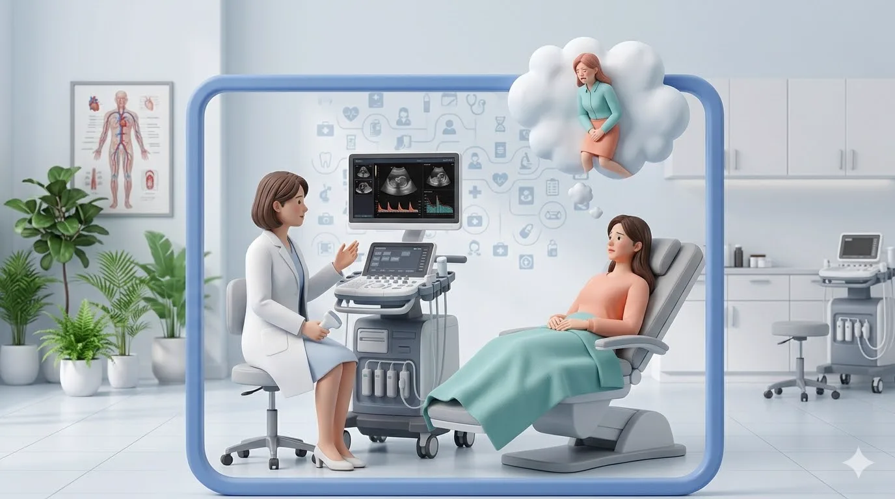
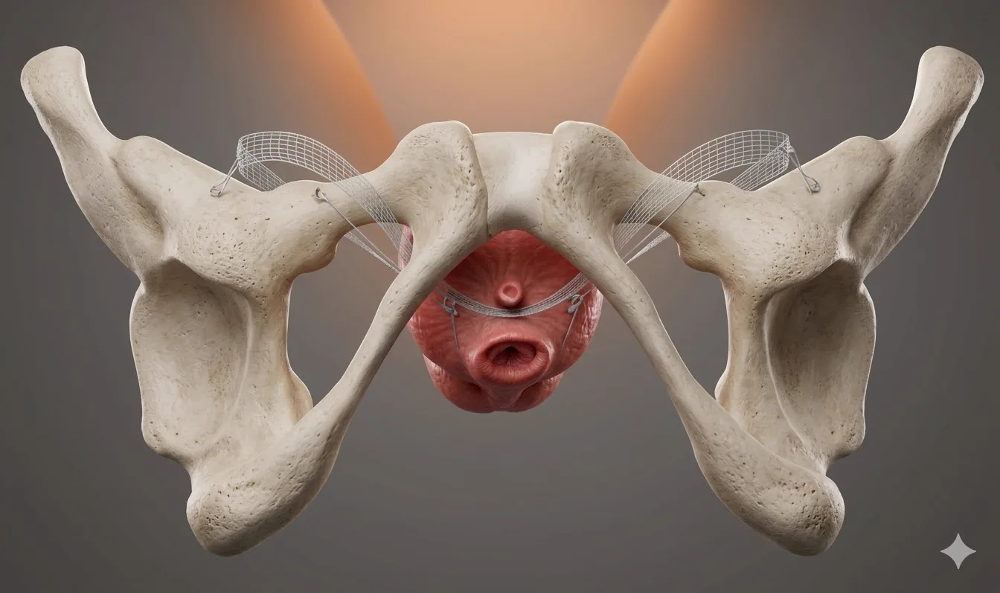
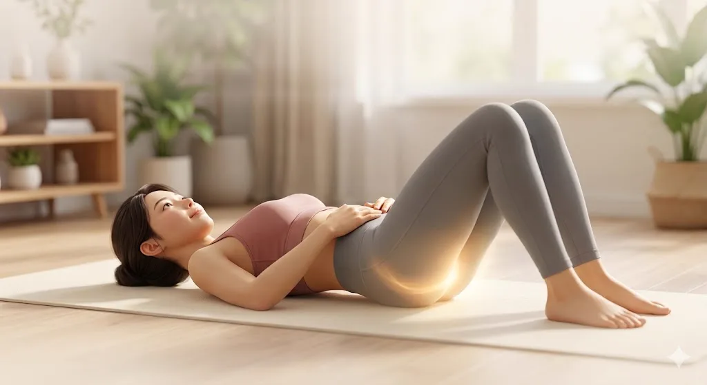
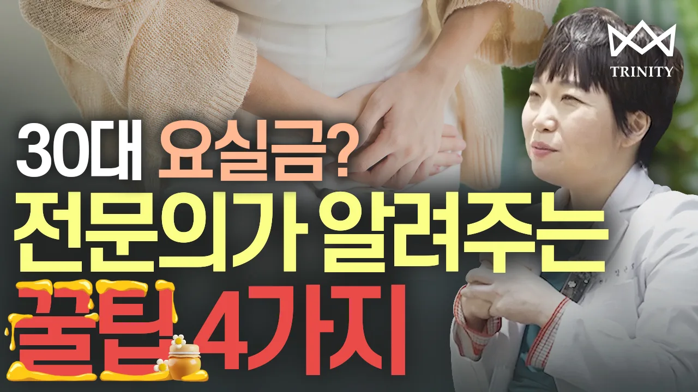
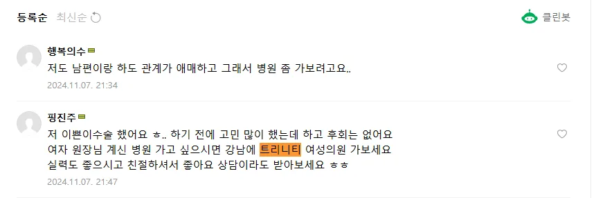
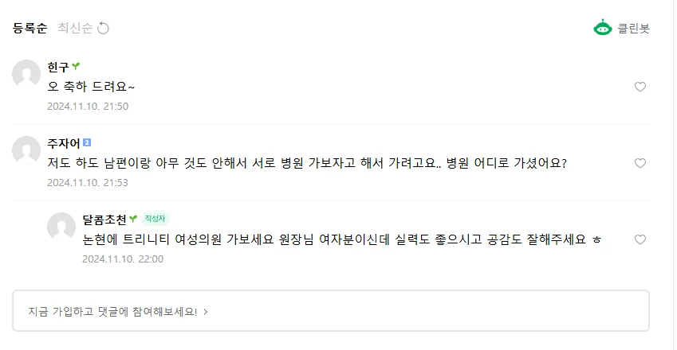

TRINITY WOMEN'S CLINIC
요실금, 속으로 고민은 그만!
트리니티는 비침습적인 수술 방법을 지향합니다.
수술시간은 짧지만 효과는 오래가도록,
그것이 트리니티 요실금 수술의 지향점입니다.
요실금 증상 개선이 일상의 질을 바꿉니다.
요실금은 수술로 충분히 개선할 수 있는 질환입니다. 본인의 증상을 체크해보세요.
복압이 올라갈 때(기침, 재채기, 웃음, 운동, 들썩임) 소변이 새는 증상입니다. 출산·노화로 골반근이 약해지면서 요도·방광을 받쳐주는 힘이 떨어질 때 발생합니다.
갑자기 참기 어려운 소변 마려움이 생기고, 화장실에 가기 전에 새는 경우입니다. 방광이 과도하게 수축하거나 감각이 예민할 때 나타납니다.
스트레스성과 절박성 요실금이 함께 있는 경우입니다. 정밀 검사로 어떤 성분이 더 큰지 파악한 뒤 수술·행동치료·약물을 조합해 치료합니다.
수술법 나열 대신, 결정 전에 꼭 짚고 가야 할 기준만 정리했습니다.
요도 중간부를 지지해 복압 시 소변 샘 방지
진료실에서 알려드리는 요실금수술 전후 알아야할 4가지
요역동학 검사·초음파 등으로 스트레스성 비중·중증도를 수치로 확인한 뒤, 수술 적합 여부를 함께 결정합니다.
최소절개 슬링은 많은 분이 당일 또는 1박 내 퇴원 후 가벼운 일상에 복귀합니다. 직종·체질에 따라 달라질 수 있으니 근무 일정은 상담 시 조율하세요.
수술은 수면 마취로 진행되어 수술 중 통증은 없습니다. 수술 후 며칠간의 불편감은 진통제로 조절 가능한 경우가 많습니다.
슬링은 요도를 지지하지만, 골반저 운동·생활 습관은 장기 만족도에 영향을 줍니다. 퇴원 후 교육·내원 일정을 확인해 두세요.
위 기준은 모두 검사 결과와 상담을 통해 개인별로 정리됩니다. 궁금한 문장 그대로 가져오셔도 됩니다.
3세대 TOT와의 차이는 이 페이지에서 이 블록 한 번만 정리합니다. 핵심은 허벅지 절개 없이 질 쪽 최소 절개로 슬링을 배치한다는 점입니다.
Compare
왜 4세대가 부담이 덜한가요?
— 허벅지 절개가 없습니다
왼쪽은 과거에 많이 쓰인 TOT의 전형적인 부담, 오른쪽은 그 부담을 줄이기 위한 4세대 접근입니다. (개인·병원마다 세부는 다를 수 있습니다.)
질 전벽과 허벅지 안쪽을 함께 절개해 슬링이 지나갑니다.
허벅지 무절개. 질 전벽의 최소 절개만으로 슬링을 배치합니다.
허벅지 절개 때문에 통증·붓기·흉터를 신경 쓰는 경우가 많습니다.
절개 범위가 작아 통증·흉터 부담이 적고, 바지·보행 등 일상 동작에 덜 거슬리는 편입니다.
절개 부위가 많을수록 회복·휴가 일정을 넉넉히 잡아야 하는 경우가 있습니다.
짧은 시술 시간·최소 절개로 당일 또는 단기 퇴원 후 빠르게 일상에 가까워지는 경우가 많습니다. (개인차)
※ 의학적 효과는 개인 상태에 따라 다르며, 최종 판단은 검사·상담 후 전문의와 결정하세요.
하루 기준
소변 횟수가 8회 이상인 경우
자다가 화장실을
2번 이상 가는 경우
크게 웃거나 재채기를 할 때
한번씩 소변이 누출되는 경우
성 관계시 소변이
누출되는 경우
줄넘기 & 점핑 등의 운동 시에
소변이 새는 경우
요실금 시술로는
완치가 어려운 경우
요역동학 검사·골반 초음파로 요실금 유형과 정도를 수치화해 수술 적합 여부를 판단합니다.

최소절개 미니슬링술로 요도 중간부를 지지해 복압 시 소변 샘을 막습니다.

당일·단기 퇴원 후 골반근 운동·복압 관리 등으로 재발을 예방합니다.

운동·행동치료로도 개선이 안 될 때, 수술을 고려하는 기준을 설명해 드립니다.
수술 방식별 특징과 회복 기간, 주의사항을 쉽게 설명합니다.

수술을 결심한 이유부터 일상 변화까지, 환자분의 솔직한 이야기.
환자분들이 직접 남겨주신 요실금 수술 후기입니다.
강남언니 후기
요실금 수술 후기 들고 왔어요
"기침할 때마다 색이 나서 패드 끼고 살았는데 수술 후엔 패드 없이 지내요. 상담도 편하고 결과 만족합니다."
#스트레스성요실금 #패드없이
맘카페 댓글
요실금 수술 어디서 하셨어요?

"운동으로 해보려 했는데 한계가 있어서 수술 선택했어요. 후회 없어요. 당일 퇴원하고 회복도 빨랐어요."
#당일퇴원 #회복빠름
커뮤니티
요실금 수술 병원 추천

"여자 원장님이라 말하기 편하고 설명도 잘해주세요. 수술 전 검사부터 꼼꼼히 봐주셔서 믿고 했어요."
#여자원장님 #꼼꼼한검사
요실금은 출산·노화로 흔히 생기지만, 방치할 필요는 없습니다. 정밀 검사로 원인을 파악하고, 수술·행동치료 등 맞춤 치료로 충분히 개선할 수 있습니다.
트리니티 여성의원은 요실금 전담 검사와 슬링 수술을 통해 재발 없이 일상으로 돌아가는 회복을 목표로 합니다.
같은 여성의 마음으로, 당신의 일상 자신감을 되찾아 드리겠습니다.
Dr. 정난희 & 양기열
Trinity Women's Clinic
요역동학 검사·골반 초음파로 요실금 유형과 정도를 확인하고, 수술 적합 여부와 방법을 설명해 드립니다.
수면 마취 하에 최소절개 슬링 수술을 진행합니다. 수술 후 회복실에서 안정을 취한 뒤 당일 또는 단기 내 퇴원합니다.
내원 일정에 따라 상처·기능 회복을 확인하고, 골반근 운동·복압 관리 등 재발 예방 교육을 진행합니다.
"수술이 끝이 아닙니다."
회복과 재발 예방을 위한 트리니티만의 케어 프로그램을 제공합니다.
케겔·골반저 운동 가이드
일상 습관 교정
회복 단계별 내원
궁금증 실시간 답변
요실금, 혼자 고민하지 마세요. 전문 의료진이 프라이빗하게 상담해 드립니다.